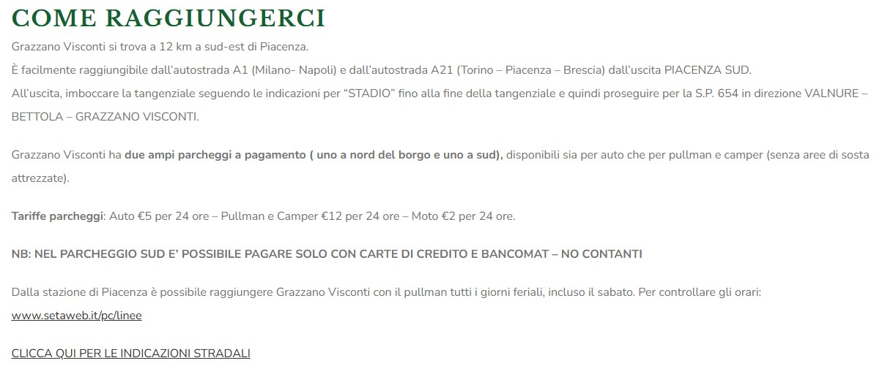

Agenda
- Problem Analysis & Context
- Refactoring objectives
- Before & After Comparison
- Design & Concepts
- Site Structure & Tools
- Development Process
- Challenges & Solutions
- Results & Future Developments
The Problem
The official Grazzano Visconti website presents several critical issues affecting user experience:
Main Issue: The site has valuable content about history, atmosphere, services, and events, but fails to communicate effectively with potential tourists.
Critical Issues Identified
- Performance: Large unoptimized images, heavy scripts, slow loading times
- Usability: Unclear navigation, confusing button placement
- Design: Static layout without clear visual hierarchy, poor use of white space
- Content: Disorganized sections (especially Info & Contacts), lack of visual appeal
- CTAs: Weak call-to-action buttons that fail to guide users
Critical Issues Identified
- Performance: Large unoptimized images, heavy scripts, slow loading times
Critical Issues Identified
- Usability: Unclear navigation, confusing button placement
Critical Issues Identified
- Design: Static layout without clear visual hierarchy, poor use of white space
Critical Issues Identified
- Content: Disorganized sections (especially Info & Contacts), lack of visual appeal 
Critical Issues Identified
- CTAs: Weak call-to-action buttons that fail to guide users
User Impact Analysis
Navigation Issues: Users get lost, can't find information quickly
Visual Appeal: Low-quality images fail to convince visitors
Conversion: Weak CTAs result in low booking/inquiry rates
International Reach: Poor multilingual support limits audience
Example of poor multilingual support:
Why This Matters
For Tourism
- First impression is crucial
- Users decide based on photos
- Mobile is the primary device
For the Village
- Lost visitor opportunities
- Reduced event participation
- Lower commercial activity
- Missed international tourism
Refactoring Objectives
Primary Goals
- Inform: Clearly present all information
- Engage: Create emotional connection
- Convert: Guide users to action
Secondary Goals
- Modern, intuitive design
- Professional photography
- Updated, well-structured content
- Event visibility (past & future)
Transformation Overview
Before
- Confusing navigation
- Scattered information
- Disappearing buttons
- Unoptimized images
- Poor mobile experience
- Generic appearance
After
- Clear, intuitive menu
- Well-organized information
- Modern, responsive design
- Curated photo galleries
- Mobile-first approach
- Unique medieval identity
Page-by-Page Improvements
Page-by-Page Improvements
Page-by-Page Improvements

Design Concept
Main Theme
- Style: Medieval-inspired
- Approach: Minimalist
- Character: Seasonal accents
Distinctive Elements
- Colors: 4 seasonal palettes
- Typography: Helvetica + Georgia
- Graphics: Medieval letters and images
Four Seasonal Themes
🌿 Normal (Summer)
Olive Green
Year-round default
🎄 Christmas (Winter)
Dark Red
Dec 8 - Jan 6
🎃 Halloween (Fall)
Saddle Brown
Oct 25+
☘️ St. Patrick's (Springtime)
Bright Green
March 17
Automatic Selection: JavaScript checks the current date and applies the appropriate theme automatically.
Dynamic Theme System - custom
Dark Theme
Black
Parchment
Parchment Paper
Implementation: CSS custom properties updated via JavaScript, changes applied instantly without page reload
Site Structure
Main Pages
- index.html: Homepage with village introduction
- castello.html: Castle history & tours
- borgo.html: Village atmosphere & features
- visite.html: Visit schedules & tickets
- contatti.html: Contact info & directions
Event Pages
- natale.html: Christmas (Dec 8 - Jan 6)
- halloween.html: Halloween (Oct 31)
- wine.html: Wine Festival (Oct 11-12)
- vampiria.html: Vampiria (Oct 4-5)
Multilingual Structure: Complete mirror in Italian and English folders
Technologies & Tools
Frontend:
- Semantic HTML5
- CSS Grid & Flexbox
- CSS Custom Properties
- Vanilla JavaScript
Features:
- Mobile-responsive
- Optimized performance
- Cross-browser compatible
Development Process
- Research & Analysis: Studied existing site and social media
- Field Research: Attended events (Halloween, Christmas), photographed locations
- Planning: Wireframes, information architecture
- Design: 4 seasonal mockups, 3 time scheduled palettes
- Development: HTML structure → CSS styling → JavaScript functionality
- Testing: Cross-browser, multi-device, performance optimization
Bootstrap 5 Integration
Strategic Usage:
- Grid System: Responsive 12-column layout foundation
- Components: Carousel (events & images), Cards (info boxes), Buttons (CTAs)
- Utilities: Spacing (mt-, mb-, p-), Display (d-flex), Alignment classes
- Customization: Body-level CSS selectors for increased specificity to override Bootstrap defaults
Key Challenges
Challenge 1: High-Quality Image Sourcing
→ Solution: Multiple field visits during events, collaborated with official social media accounts for additional content
Challenge 2: Effective Multilingual Support
→ Solution: Mirror folder structure (/Ita/ & /Eng/) with JavaScript-based switching and localStorage for preference persistence
Challenge 3: Bootstrap + Custom CSS Conflicts
→ Solution: Increased CSS specificity using body-level selectors to override Bootstrap while maintaining framework benefits
Short-term Improvements
Technical Enhancements
- Integrated booking system
- Backend for contact forms
- Newsletter subscription
- Performance monitoring
Content Additions
- Video galleries
- Detailed shop directory
- Restaurant menus & hours
- Event photo archives